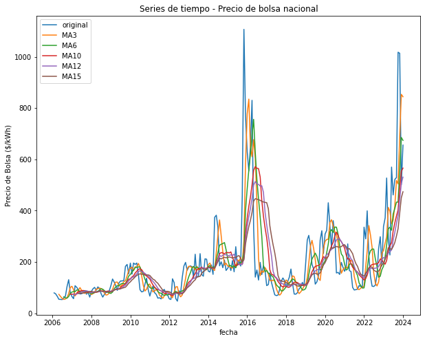
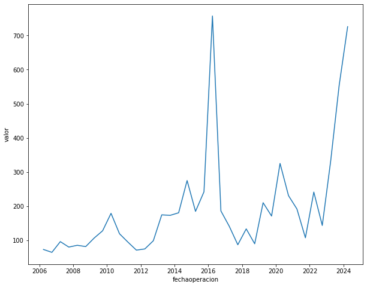
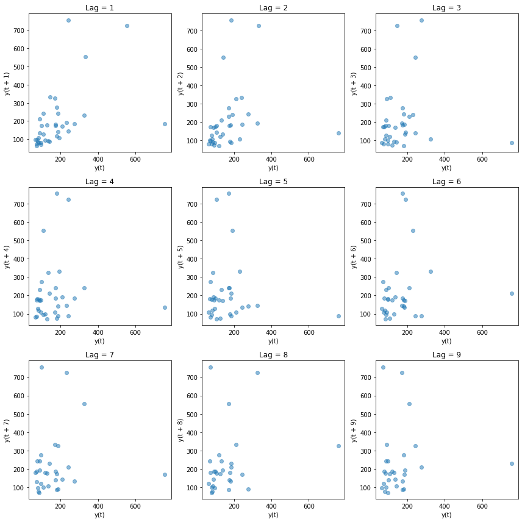

Unidad 2: Estructura de los datos en series de tiempo
Contents
Unidad 2: Estructura de los datos en series de tiempo¶
2.1 Introducción¶
Dado que una serie de tiempo es un conjunto de observaciones sobre los valores que toma una variable (cuantitativa) a través del tiempo, exploraremos las tendencias o cambios que se reflejan y afectan su comportamiento.
2.2 Acción¶
Ahora, en esta Unidad 2, se debe continuar con los datos presentados en dicho entregable y se debe evidenciar, en una de las variables en el tiempo, la aproximación en promedio móvil, en rezagos y en estacionalidad. Todo lo anterior, a través de funciones y gráficas que permitan detectar patrones y ciclos de la variable.
2.2.1 Preparación de los datos¶
# importando librerias
# librerias para la transformación de datos
import pandas as pd
import numpy as np
from datetime import datetime
from statsmodels.tsa.seasonal import seasonal_decompose
from statsmodels.tsa.stattools import adfuller
# libreria para visualización de datos
import matplotlib.pyplot as plt
import seaborn as sns
# recopilación de datos
df_data = pd.read_csv('./dataset.csv',sep=';')
df_data.head()
| fechaoperacion | codigo | contenido | hora1 | hora2 | hora3 | hora4 | hora5 | hora6 | hora7 | ... | hora15 | hora16 | hora17 | hora18 | hora19 | hora20 | hora21 | hora22 | hora23 | hora24 | |
|---|---|---|---|---|---|---|---|---|---|---|---|---|---|---|---|---|---|---|---|---|---|
| 0 | 1/01/2006 | PBNA | PRECIO DE BOLSA NACIONAL ($/KWH) | 87.778212 | 77.778212 | 77.778212 | 77.778212 | 77.778212 | 77.778212 | 75.768212 | ... | 75.768212 | 71.278212 | 69.067212 | 76.278212 | 77.778212 | 87.778212 | 87.778212 | 77.778212 | 77.778212 | 77.778212 |
| 1 | 2/01/2006 | PBNA | PRECIO DE BOLSA NACIONAL ($/KWH) | 76.278212 | 76.278212 | 76.278212 | 76.278212 | 76.278212 | 76.778212 | 76.778212 | ... | 82.778212 | 82.778212 | 82.778212 | 81.768212 | 87.778212 | 87.778212 | 87.778212 | 82.778212 | 76.778212 | 76.778212 |
| 2 | 3/01/2006 | PBNA | PRECIO DE BOLSA NACIONAL ($/KWH) | 77.678212 | 77.678212 | 77.678212 | 77.678212 | 77.678212 | 77.678212 | 77.678212 | ... | 82.778212 | 82.778212 | 82.778212 | 82.778212 | 87.778212 | 114.425212 | 87.778212 | 82.778212 | 77.678212 | 77.678212 |
| 3 | 4/01/2006 | PBNA | PRECIO DE BOLSA NACIONAL ($/KWH) | 77.778212 | 77.778212 | 77.778212 | 77.778212 | 77.778212 | 77.778212 | 77.778212 | ... | 77.778212 | 77.778212 | 77.778212 | 85.778212 | 85.778212 | 87.778212 | 85.778212 | 85.778212 | 81.768212 | 77.778212 |
| 4 | 5/01/2006 | PBNA | PRECIO DE BOLSA NACIONAL ($/KWH) | 86.778212 | 86.778212 | 86.778212 | 86.778212 | 86.778212 | 86.778212 | 88.278212 | ... | 88.278212 | 88.278212 | 88.278212 | 88.278212 | 88.278212 | 91.134212 | 88.278212 | 88.278212 | 86.778212 | 86.778212 |
5 rows × 27 columns
# información del dataset
df_data.info()
<class 'pandas.core.frame.DataFrame'>
RangeIndex: 6515 entries, 0 to 6514
Data columns (total 27 columns):
# Column Non-Null Count Dtype
--- ------ -------------- -----
0 fechaoperacion 6515 non-null object
1 codigo 6515 non-null object
2 contenido 6515 non-null object
3 hora1 6515 non-null float64
4 hora2 6515 non-null float64
5 hora3 6515 non-null float64
6 hora4 6515 non-null float64
7 hora5 6515 non-null float64
8 hora6 6515 non-null float64
9 hora7 6515 non-null float64
10 hora8 6515 non-null float64
11 hora9 6515 non-null float64
12 hora10 6515 non-null float64
13 hora11 6515 non-null float64
14 hora12 6515 non-null float64
15 hora13 6515 non-null float64
16 hora14 6515 non-null float64
17 hora15 6515 non-null float64
18 hora16 6515 non-null float64
19 hora17 6515 non-null float64
20 hora18 6515 non-null float64
21 hora19 6515 non-null float64
22 hora20 6515 non-null float64
23 hora21 6515 non-null float64
24 hora22 6515 non-null float64
25 hora23 6515 non-null float64
26 hora24 6515 non-null float64
dtypes: float64(24), object(3)
memory usage: 1.3+ MB
# Nombre de las columnas
df_data.columns
Index(['fechaoperacion', 'codigo', 'contenido', 'hora1', 'hora2', 'hora3',
'hora4', 'hora5', 'hora6', 'hora7', 'hora8', 'hora9', 'hora10',
'hora11', 'hora12', 'hora13', 'hora14', 'hora15', 'hora16', 'hora17',
'hora18', 'hora19', 'hora20', 'hora21', 'hora22', 'hora23', 'hora24'],
dtype='object')
def trf_data(df_data):
# copia del dataframe
df = df_data.copy()
# transformación de fechas
df['fechaoperacion'] = pd.to_datetime(df['fechaoperacion'], format='%d/%m/%Y')
# agregando las columnas de fechas
df['ano'] = df.apply(lambda x: x['fechaoperacion'].year ,axis=1)
df['mes'] = df.apply(lambda x: x['fechaoperacion'].month ,axis=1)
df['dia'] = df.apply(lambda x: x['fechaoperacion'].day ,axis=1)
# selección de columnas
df = df[['fechaoperacion','ano','mes','dia', 'hora1', 'hora2', 'hora3','hora4', 'hora5', 'hora6', 'hora7', 'hora8', 'hora9', 'hora10','hora11', 'hora12', 'hora13', 'hora14', 'hora15', 'hora16', 'hora17','hora18', 'hora19', 'hora20', 'hora21', 'hora22', 'hora23', 'hora24']]
# Convertir la tabla
list_id = [i.lower() for i in df.columns if not 'hora' in i]
list_value = [i.lower() for i in df.columns if 'hora' in i]
# pivotear la tabla
df = df.melt(id_vars=list_id,value_vars=list_value,var_name='periodo',value_name='valor')
return df
# dataset trasnformado
df = trf_data(df_data)
df.head()
| fechaoperacion | ano | mes | dia | periodo | valor | |
|---|---|---|---|---|---|---|
| 0 | 2006-01-01 | 2006 | 1 | 1 | hora1 | 87.778212 |
| 1 | 2006-01-02 | 2006 | 1 | 2 | hora1 | 76.278212 |
| 2 | 2006-01-03 | 2006 | 1 | 3 | hora1 | 77.678212 |
| 3 | 2006-01-04 | 2006 | 1 | 4 | hora1 | 77.778212 |
| 4 | 2006-01-05 | 2006 | 1 | 5 | hora1 | 86.778212 |
dic_fec = {'fec_ini': df['fechaoperacion'].min(),
'fec_fin': df['fechaoperacion'].max()}
dic_fec
{'fec_ini': Timestamp('2006-01-01 00:00:00'),
'fec_fin': Timestamp('2023-12-31 00:00:00')}
# creando copia del dataframe original
# df_vm = df.copy()
# # seleccionando las columnas
# df_vm = df_vm[['ano','mes','valor']]
# # agrupando los precios de oferta por mes
# df_vm = df_vm.groupby(['ano','mes']).mean().reset_index()
# # creando columna fechaoperacion ano-mes
# df_vm['fechaoperacion'] = df_vm.apply(lambda x: datetime(int(x['ano']),int(x['mes']),1),axis=1)
# df_vm = df_vm[['fechaoperacion','ano','mes','valor']]
# df_vm.head()
# creando grafico
plt.figure(figsize=(10,8))
# creando gráfico de linea
sns.lineplot(data=df_vm,x='fechaoperacion',y='valor')
# monstrando gráfico
plt.show()
---------------------------------------------------------------------------
NameError Traceback (most recent call last)
<ipython-input-9-32fa9e921b20> in <module>
3
4 # creando gráfico de linea
----> 5 sns.lineplot(data=df_vm,x='fechaoperacion',y='valor')
6
7 # monstrando gráfico
NameError: name 'df_vm' is not defined
<Figure size 720x576 with 0 Axes>
2.2.2 Funciones para detectar patrones y ciclos de la variable¶
Caso Base (Mensual): Promedio Movil¶
# creando función para remuestrar movilmente el dataset, usando la función resample
def df_resample(data,target='fechaoperacion',type='M'):
# creando copia del dataset original
df = data.copy()
# remuestrear el dataset
df = df.resample(type,on=target).mean().reset_index()
# ordenando el dataframe
df = df[['fechaoperacion','valor']]
return df
# creando una copia del dataframe transformado
df_vcm = df.copy()
# remuestreando el dataframe en frecuencia mensual
df_vcm = df_resample(df_vcm)
# muestra
df_vcm.head()
| fechaoperacion | valor | |
|---|---|---|
| 0 | 2006-01-31 | 79.026486 |
| 1 | 2006-02-28 | 75.520919 |
| 2 | 2006-03-31 | 65.787447 |
| 3 | 2006-04-30 | 54.012347 |
| 4 | 2006-05-31 | 53.819582 |
# creando grafico
plt.figure(figsize=(10,8))
# creando gráfico de linea
sns.lineplot(data=df_vcm,x='fechaoperacion',y='valor')
# monstrando gráfico
plt.show()
# creando promedio movil
df_vcm
| fechaoperacion | valor | |
|---|---|---|
| 0 | 2006-01-31 | 79.026486 |
| 1 | 2006-02-28 | 75.520919 |
| 2 | 2006-03-31 | 65.787447 |
| 3 | 2006-04-30 | 54.012347 |
| 4 | 2006-05-31 | 53.819582 |
| ... | ... | ... |
| 211 | 2023-08-31 | 528.887237 |
| 212 | 2023-09-30 | 1017.549693 |
| 213 | 2023-10-31 | 1013.522208 |
| 214 | 2023-11-30 | 500.608645 |
| 215 | 2023-12-31 | 655.417696 |
216 rows × 2 columns
# Creando promedio movil 5
df_vcm['mvl_3'] = df_vcm['valor'].rolling(window=3).mean().shift(1)
# Creando promedio movil 6
df_vcm['mvl_6'] = df_vcm['valor'].rolling(window=6).mean().shift(1)
# Creando promedio movil 10
df_vcm['mvl_10'] = df_vcm['valor'].rolling(window=10).mean().shift(1)
# Creando promedio movil 12
df_vcm['mvl_12'] = df_vcm['valor'].rolling(window=12).mean().shift(1)
df_vcm.head(20)
| fechaoperacion | valor | mvl_3 | mvl_6 | mvl_10 | mvl_12 | mvl_15 | |
|---|---|---|---|---|---|---|---|
| 0 | 2006-01-31 | 79.026486 | NaN | NaN | NaN | NaN | NaN |
| 1 | 2006-02-28 | 75.520919 | NaN | NaN | NaN | NaN | NaN |
| 2 | 2006-03-31 | 65.787447 | NaN | NaN | NaN | NaN | NaN |
| 3 | 2006-04-30 | 54.012347 | 73.444951 | NaN | NaN | NaN | NaN |
| 4 | 2006-05-31 | 53.819582 | 65.106905 | NaN | NaN | NaN | NaN |
| 5 | 2006-06-30 | 52.985621 | 57.873125 | NaN | NaN | NaN | NaN |
| 6 | 2006-07-31 | 59.316403 | 53.605850 | 63.525400 | NaN | NaN | NaN |
| 7 | 2006-08-31 | 66.532754 | 55.373868 | 60.240386 | NaN | NaN | NaN |
| 8 | 2006-09-30 | 103.448612 | 59.611592 | 58.742359 | NaN | NaN | NaN |
| 9 | 2006-10-31 | 130.511701 | 76.432590 | 65.019220 | NaN | NaN | NaN |
| 10 | 2006-11-30 | 80.435968 | 100.164356 | 77.769112 | 74.096187 | NaN | NaN |
| 11 | 2006-12-31 | 64.689679 | 104.798761 | 82.205176 | 74.237135 | NaN | NaN |
| 12 | 2007-01-31 | 56.593622 | 91.879116 | 84.155853 | 73.154011 | 73.840627 | NaN |
| 13 | 2007-02-28 | 106.988677 | 67.239756 | 83.702056 | 72.234629 | 71.971221 | NaN |
| 14 | 2007-03-31 | 100.712232 | 76.090659 | 90.444710 | 77.532262 | 74.593534 | NaN |
| 15 | 2007-04-30 | 91.821965 | 88.098177 | 89.988646 | 82.221527 | 77.503933 | 76.692137 |
| 16 | 2007-05-31 | 74.926459 | 99.840958 | 83.540357 | 86.105161 | 80.654735 | 77.545169 |
| 17 | 2007-06-30 | 75.815491 | 89.153552 | 82.622106 | 87.666167 | 82.413641 | 77.505538 |
| 18 | 2007-07-31 | 80.273499 | 80.854639 | 84.476408 | 88.594441 | 84.316130 | 78.174074 |
| 19 | 2007-08-31 | 85.246680 | 77.005150 | 88.423054 | 86.276929 | 86.062555 | 79.924818 |
# creando grafico
plt.figure(figsize=(10,8))
# creando gráfico de linea
# sns.lineplot(data=df_vcm,x='fechaoperacion',y='valor')
# sns.lineplot(data=df_vcm,x='fechaoperacion',y='mvl_5')
plt.plot(df_vcm['fechaoperacion'],df_vcm['valor'],label='original')
plt.plot(df_vcm['fechaoperacion'],df_vcm['mvl_3'],label='MA3')
plt.plot(df_vcm['fechaoperacion'],df_vcm['mvl_6'],label='MA6')
plt.plot(df_vcm['fechaoperacion'],df_vcm['mvl_10'],label='MA10')
plt.plot(df_vcm['fechaoperacion'],df_vcm['mvl_12'],label='MA12')
plt.xlabel('fecha')
plt.ylabel('Precio de Bolsa ($/kWh)')
plt.title('Series de tiempo - Precio de bolsa nacional')
# leyenda
plt.legend(loc='upper left')
# monstrando gráfico
plt.show()

# estacionario
adf = adfuller(df_vcm['valor'],maxlag=1)
print('El T-Test es: ',adf[0])
print('El p-value es: ',adf[1])
print('Valores criticos: ',adf[4])
El T-Test es: -4.2831367549258434
El p-value es: 0.0004750482118971582
Valores criticos: {'1%': -3.461136478222043, '5%': -2.875078880098608, '10%': -2.5739861168199027}
print('El p-value es: ',adf[1])
print('Valores criticos: ',adf[4])
El p-value es: 0.0004750482118971582
Valores criticos: {'1%': -3.461136478222043, '5%': -2.875078880098608, '10%': -2.5739861168199027}
df_vcm['diff'] = df_vcm['valor'].diff()
df_vcm.head(20)
| fechaoperacion | valor | mvl_3 | mvl_6 | mvl_10 | mvl_12 | mvl_15 | diff | |
|---|---|---|---|---|---|---|---|---|
| 0 | 2006-01-31 | 79.026486 | NaN | NaN | NaN | NaN | NaN | NaN |
| 1 | 2006-02-28 | 75.520919 | NaN | NaN | NaN | NaN | NaN | -3.505567 |
| 2 | 2006-03-31 | 65.787447 | NaN | NaN | NaN | NaN | NaN | -9.733472 |
| 3 | 2006-04-30 | 54.012347 | 73.444951 | NaN | NaN | NaN | NaN | -11.775100 |
| 4 | 2006-05-31 | 53.819582 | 65.106905 | NaN | NaN | NaN | NaN | -0.192766 |
| 5 | 2006-06-30 | 52.985621 | 57.873125 | NaN | NaN | NaN | NaN | -0.833961 |
| 6 | 2006-07-31 | 59.316403 | 53.605850 | 63.525400 | NaN | NaN | NaN | 6.330782 |
| 7 | 2006-08-31 | 66.532754 | 55.373868 | 60.240386 | NaN | NaN | NaN | 7.216351 |
| 8 | 2006-09-30 | 103.448612 | 59.611592 | 58.742359 | NaN | NaN | NaN | 36.915858 |
| 9 | 2006-10-31 | 130.511701 | 76.432590 | 65.019220 | NaN | NaN | NaN | 27.063089 |
| 10 | 2006-11-30 | 80.435968 | 100.164356 | 77.769112 | 74.096187 | NaN | NaN | -50.075733 |
| 11 | 2006-12-31 | 64.689679 | 104.798761 | 82.205176 | 74.237135 | NaN | NaN | -15.746289 |
| 12 | 2007-01-31 | 56.593622 | 91.879116 | 84.155853 | 73.154011 | 73.840627 | NaN | -8.096057 |
| 13 | 2007-02-28 | 106.988677 | 67.239756 | 83.702056 | 72.234629 | 71.971221 | NaN | 50.395055 |
| 14 | 2007-03-31 | 100.712232 | 76.090659 | 90.444710 | 77.532262 | 74.593534 | NaN | -6.276445 |
| 15 | 2007-04-30 | 91.821965 | 88.098177 | 89.988646 | 82.221527 | 77.503933 | 76.692137 | -8.890267 |
| 16 | 2007-05-31 | 74.926459 | 99.840958 | 83.540357 | 86.105161 | 80.654735 | 77.545169 | -16.895506 |
| 17 | 2007-06-30 | 75.815491 | 89.153552 | 82.622106 | 87.666167 | 82.413641 | 77.505538 | 0.889032 |
| 18 | 2007-07-31 | 80.273499 | 80.854639 | 84.476408 | 88.594441 | 84.316130 | 78.174074 | 4.458007 |
| 19 | 2007-08-31 | 85.246680 | 77.005150 | 88.423054 | 86.276929 | 86.062555 | 79.924818 | 4.973181 |
%%capture
print('Prueba de mensaje')
Prueba de mensaje
Caso Base (Mensual): Rezagos¶
pd.plotting.lag_plot(df_vcm['valor'], lag=1)
<AxesSubplot:xlabel='y(t)', ylabel='y(t + 1)'>
# Creando función para gráficar los rezagos del dataset
# Crear un panel de gráficos 3x3
fig, axes = plt.subplots(3, 3, figsize=(12, 12))
# Iterar sobre las filas y columnas del panel
for i in range(3):
for j in range(3):
lag = i * 3 + j + 1 # Calcular el lag correspondiente
ax = axes[i, j] # Obtener el eje actual
# Calcular y graficar el lag plot con el lag actual
ax.plot(df_vcm['valor'][:-lag], df_vcm['valor'][lag:], 'o', alpha=0.5)
ax.set_title(f'Lag = {lag}')
ax.set_xlabel('y(t)')
ax.set_ylabel(f'y(t + {lag})')
# Ajustar el espaciado entre los subplots
plt.tight_layout()
plt.show()

Caso Base (Mensual): Estacionalidad¶
# Establecer 'fechaoperacion' como el índice del DataFrame
df_vcm.set_index('fechaoperacion', inplace=True)
# Asegúrate de que la frecuencia esté definida (por ejemplo, mensual 'M')
df_vcm.index.freq = 'M'
# Realizar la descomposición estacional de la serie temporal
result = seasonal_decompose(df_vcm['valor'], model='additive')
# Graficar la serie original, la tendencia, la estacionalidad y el residuo
plt.figure(figsize=(12, 8))
plt.subplot(4, 1, 1)
plt.plot(df_vcm['valor'], label='Original')
plt.legend(loc='upper left')
plt.subplot(4, 1, 2)
plt.plot(result.trend, label='Tendencia')
plt.legend(loc='upper left')
plt.subplot(4, 1, 3)
plt.plot(result.seasonal, label='Estacionalidad')
plt.legend(loc='upper left')
plt.subplot(4, 1, 4)
plt.plot(result.resid, label='Residuo')
plt.legend(loc='upper left')
plt.tight_layout()
plt.show()
Caso 1 (Trimestre): Promedio Movil¶
# creando una copia
df_vct = df.copy()
# remuestreando a trimestre
df_vct = df_resample(df_vct,type='Q')
# muestra
df_vct.head()
| fechaoperacion | valor | |
|---|---|---|
| 0 | 2006-03-31 | 73.375752 |
| 1 | 2006-06-30 | 53.608199 |
| 2 | 2006-09-30 | 76.138937 |
| 3 | 2006-12-31 | 92.003498 |
| 4 | 2007-03-31 | 102.905929 |
# creando grafico
plt.figure(figsize=(10,8))
# creando gráfico de linea
sns.lineplot(data=df_vct,x='fechaoperacion',y='valor')
# monstrando gráfico
plt.show()
Caso 1 (Trimestre): Rezagos¶
# Crear un panel de gráficos 3x3
fig, axes = plt.subplots(3, 3, figsize=(12, 12))
# Iterar sobre las filas y columnas del panel
for i in range(3):
for j in range(3):
lag = i * 3 + j + 1 # Calcular el lag correspondiente
ax = axes[i, j] # Obtener el eje actual
# Calcular y graficar el lag plot con el lag actual
ax.plot(df_vct['valor'][:-lag], df_vct['valor'][lag:], 'o', alpha=0.5)
ax.set_title(f'Lag = {lag}')
ax.set_xlabel('y(t)')
ax.set_ylabel(f'y(t + {lag})')
# Ajustar el espaciado entre los subplots
plt.tight_layout()
plt.show()
Caso 1 (Trimestre): Estacionalidad¶
# Establece 'fechaoperacion' como el índice del DataFrame
df_vct.set_index('fechaoperacion', inplace=True)
# Asegúrate de que la frecuencia esté definida (por ejemplo, mensual 'M')
df_vct.index.freq = 'Q'
# Realizar la descomposición estacional de la serie temporal
result = seasonal_decompose(df_vct['valor'], model='additive')
# Graficar la serie original, la tendencia, la estacionalidad y el residuo
plt.figure(figsize=(12, 8))
plt.subplot(4, 1, 1)
plt.plot(df_vct['valor'], label='Original')
plt.legend(loc='upper left')
plt.subplot(4, 1, 2)
plt.plot(result.trend, label='Tendencia')
plt.legend(loc='upper left')
plt.subplot(4, 1, 3)
plt.plot(result.seasonal, label='Estacionalidad')
plt.legend(loc='upper left')
plt.subplot(4, 1, 4)
plt.plot(result.resid, label='Residuo')
plt.legend(loc='upper left')
plt.tight_layout()
plt.show()

Caso 2 (Semestre): Promedio Movil¶
# creando una copia
df_vcs = df.copy()
# remuestreando de acuerdo a lo que se quiere trimestre
df_vcs = df_resample(df_vcs,type='2Q')
# muestra
df_vcs.head()
| fechaoperacion | valor | |
|---|---|---|
| 0 | 2006-03-31 | 73.375752 |
| 1 | 2006-09-30 | 64.935127 |
| 2 | 2007-03-31 | 96.307089 |
| 3 | 2007-09-30 | 80.349321 |
| 4 | 2008-03-31 | 85.574471 |
# creando grafico
plt.figure(figsize=(10,8))
# creando gráfico de linea
sns.lineplot(data=df_vcs,x='fechaoperacion',y='valor')
# monstrando gráfico
plt.show()

Caso 2 (Semestre): Rezagos¶
# Crear un panel de gráficos 3x3
fig, axes = plt.subplots(3, 3, figsize=(12, 12))
# Iterar sobre las filas y columnas del panel
for i in range(3):
for j in range(3):
lag = i * 3 + j + 1 # Calcular el lag correspondiente
ax = axes[i, j] # Obtener el eje actual
# Calcular y graficar el lag plot con el lag actual
ax.plot(df_vcs['valor'][:-lag], df_vcs['valor'][lag:], 'o', alpha=0.5)
ax.set_title(f'Lag = {lag}')
ax.set_xlabel('y(t)')
ax.set_ylabel(f'y(t + {lag})')
# Ajustar el espaciado entre los subplots
plt.tight_layout()
plt.show()

df_vcs.head()
| fechaoperacion | valor | |
|---|---|---|
| 0 | 2006-03-31 | 73.375752 |
| 1 | 2006-09-30 | 64.935127 |
| 2 | 2007-03-31 | 96.307089 |
| 3 | 2007-09-30 | 80.349321 |
| 4 | 2008-03-31 | 85.574471 |
Caso 2 (Semestre): Estacionalidad¶
# Establece 'fechaoperacion' como el índice del DataFrame
df_vcs.set_index('fechaoperacion', inplace=True)
# Asegúrate de que la frecuencia esté definida (por ejemplo, mensual 'M')
df_vcs.index.freq = '2Q'
# Realizar la descomposición estacional de la serie temporal
result = seasonal_decompose(df_vcs['valor'], model='additive')
# Graficar la serie original, la tendencia, la estacionalidad y el residuo
plt.figure(figsize=(12, 8))
plt.subplot(4, 1, 1)
plt.plot(df_vcs['valor'], label='Original')
plt.legend(loc='upper left')
plt.subplot(4, 1, 2)
plt.plot(result.trend, label='Tendencia')
plt.legend(loc='upper left')
plt.subplot(4, 1, 3)
plt.plot(result.seasonal, label='Estacionalidad')
plt.legend(loc='upper left')
plt.subplot(4, 1, 4)
plt.plot(result.resid, label='Residuo')
plt.legend(loc='upper left')
plt.tight_layout()
plt.show()
Caso 3 (Anual): Promedio Movil¶
# creando una copia
df_vca = df.copy()
# remuestreando de acuerdo a lo que se quiere trimestre
df_vca = df_resample(df_vca,type='Y')
# muestra
df_vca.head()
| fechaoperacion | valor | |
|---|---|---|
| 0 | 2006-12-31 | 73.839090 |
| 1 | 2007-12-31 | 83.252195 |
| 2 | 2008-12-31 | 87.834835 |
| 3 | 2009-12-31 | 139.280431 |
| 4 | 2010-12-31 | 128.732954 |
# creando grafico
plt.figure(figsize=(10,8))
# creando gráfico de linea
sns.lineplot(data=df_vca,x='fechaoperacion',y='valor')
# monstrando gráfico
plt.show()
Caso 3 (Anual): Rezagos¶
# Crear un panel de gráficos 3x3
fig, axes = plt.subplots(3, 3, figsize=(12, 12))
# Iterar sobre las filas y columnas del panel
for i in range(3):
for j in range(3):
lag = i * 3 + j + 1 # Calcular el lag correspondiente
ax = axes[i, j] # Obtener el eje actual
# Calcular y graficar el lag plot con el lag actual
ax.plot(df_vca['valor'][:-lag], df_vca['valor'][lag:], 'o', alpha=0.5)
ax.set_title(f'Lag = {lag}')
ax.set_xlabel('y(t)')
ax.set_ylabel(f'y(t + {lag})')
# Ajustar el espaciado entre los subplots
plt.tight_layout()
plt.show()
Caso 3 (Anual): Estacionalidad¶
# Establece 'fechaoperacion' como el índice del DataFrame
df_vca.set_index('fechaoperacion', inplace=True)
# Asegúrate de que la frecuencia esté definida (por ejemplo, mensual 'M')
df_vca.index.freq = 'Y'
# Realizar la descomposición estacional de la serie temporal
result = seasonal_decompose(df_vca['valor'], model='additive')
# Graficar la serie original, la tendencia, la estacionalidad y el residuo
plt.figure(figsize=(12, 8))
plt.subplot(4, 1, 1)
plt.plot(df_vca['valor'], label='Original')
plt.legend(loc='upper left')
plt.subplot(4, 1, 2)
plt.plot(result.trend, label='Tendencia')
plt.legend(loc='upper left')
plt.subplot(4, 1, 3)
plt.plot(result.seasonal, label='Estacionalidad')
plt.legend(loc='upper left')
plt.subplot(4, 1, 4)
plt.plot(result.resid, label='Residuo')
plt.legend(loc='upper left')
plt.tight_layout()
plt.show()